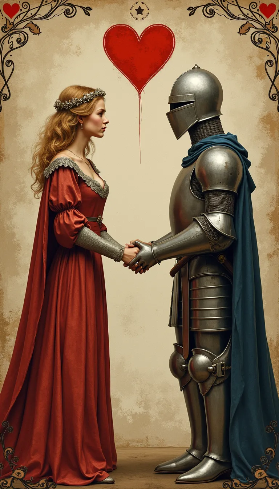
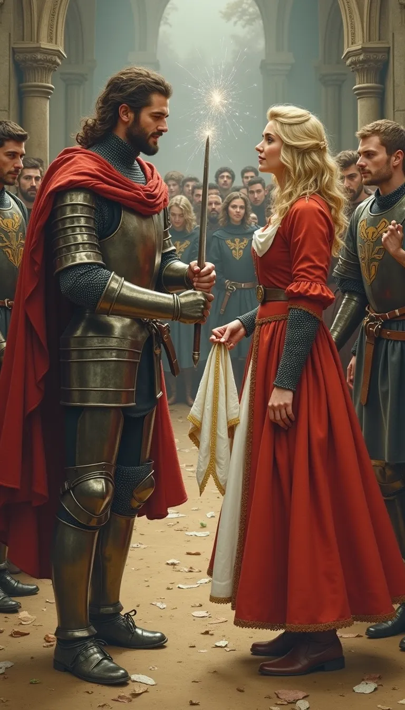

Herzschmerz im Kettenhemd: Mein Ritter ist (fast) vergeben!
Ein Ratgeber für hoffnungslose Burgfräulein (und andere).

Das Dilemma: Liebe vs. Loyalität (und vielleicht ein Duell)
-
Er ist tapfer, er ist edel, er hat tolle Rüstung... aber eine
Verlobte.
-
Ist es wahre Liebe? Oder nur die Faszination des
Unerreichbaren?
- Was sagt die Gesellschaft? (Spoiler: Nichts Gutes!)
-
Was sagt die Kirche? (Noch weniger Gutes! Die Regeln sind
streng!)
Strategie 1: Die edle Dulderin – Seufzen und Weinen
- Schreibe traurige Gedichte.
- Blicke ihm sehnsüchtig nach.
- Vertraue dich deiner Zofe an (falls du eine hast).
-
Vorteil: Gesellschaftlich akzeptiert. Nachteil: Bringt nichts.

Strategie 2: Die Kunst der Andeutung – Ein Lächeln, ein
Taschentuch...
- "Verliere" dein Taschentuch strategisch günstig.
- Wirf ihm beim Turnier einen bedeutungsvollen Blick zu.
-
Sei zufällig immer da, wo er ist (im Klosterhof? Bei der
Schmiede?).
-
Risiko: Er kapiert es nicht. Oder seine Verlobte kapiert es.
Strategie 3: Offensive! – Alles ist erlaubt in Krieg und Liebe?
-
Finde Schwächen der Verlobten und nutze sie (Gerüchte
streuen?).
- Sei charmanter, schöner, interessanter.
- Fordere sie zum Duell... äh, vielleicht nicht.
- Hohes Risiko: Skandal, Verbannung, vergifteter Wein.
Strategie 4: Klartext reden – Was hast du zu verlieren? (Außer
deiner Ehre)
-
Suche ein geheimes Treffen (im Wald? Im verlassenen Kloster?).
- Gestehe deine Gefühle offen und ehrlich.
-
Sei vorbereitet auf jede Reaktion: Ablehnung, Verwirrung,
Flucht...
-
Vielleicht ist er ja auch unglücklich verlobt? (Politische
Ehen sind häufig!).
Strategie 5: Liebestränke & Zaubersprüche – Wenn alles andere
versagt
-
Suche die alte Kräuterfrau im Wald (aber Vorsicht,
Hexereiverdacht!).
-
Braue einen Liebestrank (Nebenwirkungen unbekannt und
potenziell fatal).
- Sprich einen Zauber (könnte nach hinten losgehen).
- Extrem hohes Risiko: Anklage wegen Hexerei.
Strategie 6: Neue Hobbys, neue Männer! – Es gibt noch andere
Ritter (oder Novizen?)
- Lerne lesen und schreiben.
- Werde eine unbesiegbare Kämpferin.
- Engagiere dich im Kloster (aber nicht ZU sehr).
-
Schau dich um: Vielleicht ist der nette Knappe oder der
schüchterne Novize doch interessanter?
Strategie 7: Intrigen spinnen – Der Zweck heiligt die Mittel?
- Fälsche Briefe.
-
Streue kompromittierende Gerüchte über die Verlobte ODER den
Ritter.
- Sorge für "zufällige" Missverständnisse.
- Erfordert List, Geduld und Skrupellosigkeit.
- Kann zu Blutfehden führen. Nur für Profis.
Fazit: Wäge ab und wähle weise (oder leide dramatisch)
-
Es gibt keine einfache Antwort. Jede Option hat Risiken.
-
Höre auf dein Herz... und deinen Verstand (falls vorhanden).
-
Und wenn alles scheitert: Es gibt immer noch das Kloster. Oder
den nächsten Kreuzzug (für ihn).